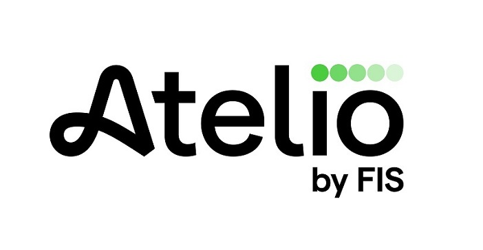

HI THERE
I’m Arnab Saha Sr. Software Engineer working in Atelio.
9Years of Experience
5Companies
30+Projects

About Me
Senior Backend Software Engineer with over 9 years of experience designing, building, and deploying scalable, cloud-native solutions on AWS. Currently leading the Know Your Customer (KYC) team at Atelio by Fidelity Information Services, where I've built comprehensive KYC solutions from concept to deployment, incorporating document verification, device profiling, and real-time verification checks.
Before joining Sunpower, I spent 4.5 years at Amazon, working on various customer-centric initiatives. As part of the team responsible for Alexa Show, I engineered multiple shopping functionalities including Buy, Search, Reorder, and Add to Cart features. My stint at Amazon also took me to the cutting-edge Amazon Go project for 2 years. There, I was instrumental in rearchitecting and scaling backend services, enabling the expansion from smaller storefronts to full-fledged Amazon Go Grocery outlets.
I earned my Master's degree in Computer Science from North Carolina State University in Raleigh, graduating in 2017. When I'm not immersed in code, you'll find me strumming my guitar, exploring new destinations, or engrossed in a good book. I'm also a devoted dog owner who relishes quality time with my furry friend.
Lead Engineer in the Know Your Customer (KYC) team.
Built a Know Your Customer solution from concept to deployment, incorporating document verification, device profiling, and real-time selfie, phone, email, and sanctions checks. Successfully onboarded two major banks for in-branch verification, facilitating thousands of verifications. This reduced customer verification time from days to minutes through automation and minimal manual intervention, resulted in 8% decrease in fraud account openings.
Designed and built a highly accurate sanctions screening service from the ground up, capable of processing user information (name, DOB, address) to determine sanctions list presence. This solution has been widely adopted by internal teams and external clients, demonstrating over 99.9% accuracy in identifying sanctioned entities and bolstering regulatory compliance.
Developed a robust sanctions ingestion service responsible for seamlessly integrating third-party sanctions data into the database, ensuring the sanctions service has immediate access to the latest information for real-time lookups.
Jan 2023 - Present
Sunpower
Staff Software Engineer
Works in the Customer Care Development team.
Architected, built, and deployed an innovative chat platform integrated within the My Sunpower app. Leveraging artificial intelligence, the system intelligently understands customer queries to recommend relevant articles for immediate issue resolution. For more complex or unique concerns where a pre-existing article doesn't suffice, the platform effortlessly routes the customer to a live agent for personalized assistance, either via chat or a callback feature. This solution currently serves approximately 5,000 customers, with around 4,500 of them being seamlessly connected to live agents on a weekly basis.
Developed a robust platform integrated into the My Sunpower app that empowers customers to effortlessly monitor the progress of their Customer Care Cases. Users can not only initiate a new case but also contribute comments and, if necessary, request a connection to a live agent. This solution is actively utilized by around 2,000 customers weekly and has contributed to more than 10% reduction in call volumes for our care agents.
Played a pivotal role in transforming Sunpower's customer support infrastructure by phasing out the old contact center and developing an innovative, in-house solution utilizing Amazon Connect. Spearheaded the initiative to migrate an extensive dataset of 5.7 million customer call recordings and related metadata from the legacy system to AWS S3. This ensured seamless accessibility and efficient data retrieval. This strategic move significantly optimized infrastructure and operational costs, cutting down the annual expenses of our contact center from $1.2 million to $500,000 in 2023. This strategic overhaul resulted in substantial annual savings of $700,000.
Aug 2018 - Jan 2023
Amazon.com
Software Development Engineer
Worked in the Alexa Shopping Purchase Experience team.
Orchestrated the design, development, and launch of a revamped customer experience focusing on Buy/Search/Reorder functionalities for Alexa display devices. Leading a skilled team of three engineers, I oversaw both front-end and backend development for this enhanced user interface. The new experience is actively engaged with by approximately 10,000 customers daily, and facilitates over 1,000 transactions on a day-to-day basis.
Conceptualized, engineered, and rolled out a new customer experience specifically for the 'Add Item to Cart' feature on Alexa display devices. I was responsible for both front-end and back-end development to create a seamless and intuitive interface. This revamped experience is actively utilized by ~2k customers on a daily basis.
Established a new reporting framework to weekly highlight operational challenges across all teams in the Purchase Experience division, ensuring visibility at the leadership level. This streamlined process not only enhanced the quality of monthly operational reports but also provided actionable insights to alleviate team-specific operational bottlenecks. Due to its effectiveness, the process was subsequently adopted by all the teams reporting to the director.
Worked in the Customer Shopping and Receipts team.
Engineered and implemented a scalable solution to facilitate simultaneous sessions for hundreds of customers at Amazon Go Grocery. These crucial optimizations were pivotal to the successful launch of the Amazon Go Grocery initiative. Moreover, these enhancements yielded significant performance improvements, cutting down average checkout latencies by 30 seconds. For sessions involving more than five customers, the latency was further reduced by a full minute.
Led the design and implementation of GDPR-compliant solutions within our service architecture, ensuring the secure and automatic removal of data exceeding a 30-day retention period. Furthermore, I managed the smooth migration of all 17 consumer interfaces to this GDPR-compliant data store without any service interruptions. This essential compliance work cleared the path for Amazon Go's successful debut in the UK.
Crafted a specialized framework for conducting realistic load tests, designed to push our services to their scaling limits, specifically for Amazon Go Grocery. This initiative empowered our team to identify, debug, and resolve service bottlenecks that were impeding the successful launch of Amazon Go Grocery.
July 2017 - July 2018
Hughes Network Systems
Member of Technical Staff
Worked in the Network Management System team.
Engineered a real-time analytics application that aggregates network device statistics, stores them in MongoDB, and presents the data through visual graphs.
Developed RESTful APIs for data retrieval in JSON format and constructed multiple web UIs using HTML and JavaScript.
Aug 2013 - July 2015
Global IDs
Software Developer
Worked in the field of Data Discovery and Profiling in RDBMS and HDFS.
Engineered a versatile framework for data extraction from various Graph Databases, including Titan, Neo4j, and InfiniteGraph, and created a monitoring application to visualize data and schema changes over time.
Developed a suite of web services, both actionable for task initiation and RESTful for specific data retrieval, catering to the needs of Global IDs software.
Designed a Graph Search algorithm that enables partial and phrase-based searches, employing intelligent indexing and query modification to reduce search times by 25%.
Built user interfaces using Java Swing for desktop and GWT for web applications, enhancing the user experience.
Latest works
Buy Item on Echo Show
Created a new shopping experience for Buy/Search/Reorder Item on Alexa Echo Show. This work was done using APL in the front end and Java in the backend. The experience has a daily active user of above 10K customers and more than 1K purchases are made daily.
Designed and developed the support for hundreds of customers in a single session for Amazon Go Grocery. These optimizations were critical to the launch of Amazon Go Grocery. Additionally, it reduced the average checkout latencies by 30 secs and for sessions with more than 5 customers, it reduced by 1 min.
Designed and implemented the EU data regulations (GDPR) for the services. This work was to ensure safe and automated delete of any data older than 30 days and to migrate all the 17 consumers to the GDPR compliant store without any downtime. This work unblocked the Amazon Go launch in UK.